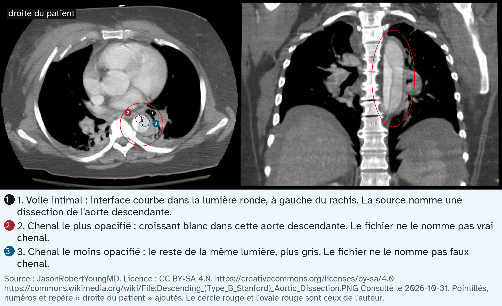

Exemple d'illustration, enzymes cardiaques anormales
Document de démonstration de l'outil d'illustration, non validé cliniquement.

- Voile intimal : interface courbe dans la lumière ronde, à gauche du rachis. La source nomme une dissection de l'aorte descendante.
- Chenal le plus opacifié : croissant blanc dans cette aorte descendante. Le fichier ne le nomme pas vrai chenal.
- Chenal le moins opacifié : le reste de la même lumière, plus gris. Le fichier ne le nomme pas faux chenal.
Scanner du thorax injecté, coupes axiale et coronale. La description du fichier indique une dissection traumatique de l'aorte descendante, type Stanford B. Le cercle et l'ovale rouges sont les marques de l'auteur. Les pointillés ajoutés restent dans la lumière ronde, du côté gauche du patient (à droite de l'image). Le repère « droite du patient » est à gauche de l'image. L'aorte ascendante n'est pas cernée : elle n'est pas isolée sur cette coupe.
Pièges. Ne pas suivre le cercle rouge : il dépasse la lumière aortique. Ne pas appeler vrai chenal ou faux chenal ce que la source ne nomme pas.
Source : JasonRobertYoungMD. Licence : CC BY-SA 4.0. https://creativecommons.org/licenses/by-sa/4.0 https://commons.wikimedia.org/wiki/File:Descending_(Type_B_Stanford)_Aortic_Dissection.PNG Consulté le 2026-10-31. Pointillés, numéros et repère « droite du patient » ajoutés. Le cercle rouge et l'ovale rouge sont ceux de l'auteur.
- 99e percentile de la troponine T ultrasensible : 14 ng/L (Revue médicale suisse, 19 octobre 2016). Seule valeur chiffrée du schéma.
- Lésion aiguë, schéma : montée, pic, puis décroissance. Aucune ordonnée n'est une mesure. L'heure du pic n'est pas une donnée.
- Lésion chronique, schéma : plateau au-dessus du seuil, sans pic et sans décroissance.
Schéma original. L'axe vertical n'a pas d'échelle de patient. Le seul chiffre est la ligne 1. La courbe 2 montre une lésion aiguë : elle franchit le seuil, culmine, puis redescend. La courbe 3 montre une lésion chronique, presque plate. Les seuils propres à un dosage ne sont pas dessinés.
Pièges. Ne pas lire ces courbes comme le résultat d'un patient. Ne pas confondre le plateau chronique avec la décroissance d'une lésion aiguë.
Schéma original (pas une figure tierce). Interprétation des troponines ultrasensibles dans l'insuffisance rénale chronique (Revue Médicale Suisse, 19 octobre 2016, Kolb et al. Extrait evidence/rms2016_irc.txt, lu le 2026-10-31). Troponine élevée sans infarctus du myocarde (Revue Médicale Suisse, 22 mai 2019, Von Düring et al. Extrait evidence/rms2019_troponine.txt, lu le 2026-10-31). Prise en charge du syndrome coronarien aigu. Recommandations 2023 de la Société européenne de cardiologie (Revue Médicale Suisse, 2024, Planchat et al. Extrait evidence/rms2024_sca.txt, lu le 2026-10-31).
L'essentiel
Deux figures pour le LOT 150 : scanner annoté d'une dissection aortique, et schéma de cinétique de la troponine haute sensibilité. Ce n'est pas la leçon.
Sommaire
La leçon reste dans le LOT, en lecture seule. Cette page ne fait que montrer le rendu de l'outil.
1. Définition
Le signe dessiné est celui visible sur le cliché source, pas une définition inventée.
2. Épidémiologie
Aucune fréquence n'est ajoutée ici.
3. Physiopathologie
Le schéma de troponine sépare une forme rise-and-fall d'une forme plate, toutes deux qualitatives.
4. Démarche
L'ordre des numéros suit la lecture du cliché, puis le graphe de gauche à droite.
5. Anamnèse
Pas d'histoire clinique dans cette page.
6. Examen
Pas d'examen physique dans cette page.
7. Syndromes
La sémiologie du scanner est sous la première figure.
8. Diagnostic
La source Commons nomme une dissection de type Stanford A.
9. Examens
Scanner injecté pour l'imagerie. Schéma pour la biologie, faute d'une lame utile.
10. Décision
Les seuils d'un dosage particulier ne sont pas dessinés.
11. Suisse
Les chiffres repris viennent des textes suisses lus dans le dossier de preuves.
12. Prévention
Hors sujet de cette illustration.
13. Points clés
Licence libre obligatoire. Contour en pointillés. Numéros lisibles.
14. Pièges
Ne pas lire une densité sur cette photographie de film. Ne pas attribuer une cinétique à la dissection sans source.
Sources
Détail dans SOURCES.json du même dossier. Source : JasonRobertYoungMD. Licence : CC BY-SA 4.0. https://creativecommons.org/licenses/by-sa/4.0 https://commons.wikimedia.org/wiki/File:Descending_(Type_B_Stanford)_Aortic_Dissection.PNG Consulté le 2026-10-31.